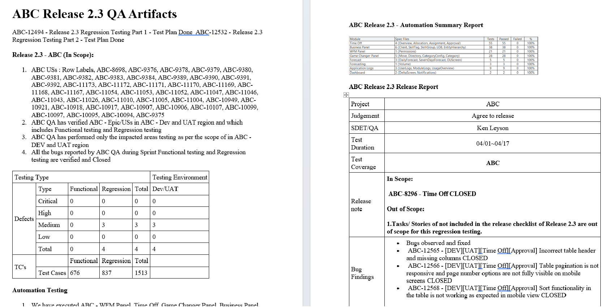

A fictional release-readiness case study demonstrating how QA findings can be transformed into a concise, stakeholder-friendly quality report.
A release-quality report brings together testing results, defects, risks, and outstanding items so stakeholders can make an informed release decision.
Large amounts of QA information can make it difficult for stakeholders to quickly understand whether a release is ready.
Summarize the most important quality indicators, identify release risks, and provide a clear recommendation supported by testing evidence.
Example dashboard information from a fictional release.
Sample release-quality documentation demonstrating how testing results, risks, and release recommendations can be consolidated into a stakeholder-friendly report.

| Testing Area | Executed | Passed | Failed | Status |
|---|---|---|---|---|
| Functional Testing | 60 | 58 | 2 | Review |
| Regression Testing | 35 | 34 | 1 | Review |
| Integration Testing | 15 | 13 | 2 | Review |
| Smoke Testing | 10 | 10 | 0 | Pass |
Defect counts alone do not determine release readiness. Severity, business impact, workaround availability, and affected functionality also need to be considered.
| Severity | Open | Resolved | Total |
|---|---|---|---|
| Critical | 0 | 2 | 2 |
| High | 1 | 5 | 6 |
| Medium | 2 | 8 | 10 |
| Low | 3 | 7 | 10 |
One high-severity defect remains open in a business workflow. Further validation and stakeholder review are recommended before release.
Two integration scenarios remain unresolved. Additional validation should confirm whether the failures affect production-critical flows.
Several low-severity issues remain but do not currently prevent the primary business workflows from operating.
The release demonstrates acceptable coverage of the primary workflows, with no open critical defects. However, the remaining high-severity issue should be reviewed with the product and business stakeholders before the final release decision.
Recommended next actions: validate the affected workflow, confirm business impact, review the available workaround, and obtain stakeholder agreement on the remaining release risk.
A quality report should make technical information understandable to people who may not work directly with the test suite.
Testing identified a high-severity issue affecting one business workflow.
The issue may affect users completing an important business process.
Releasing without additional validation could introduce avoidable business impact.
Review the issue, validate the impact, and make an informed release decision.
Illustrative portfolio metrics showing how structured reporting can improve communication.
QA reporting is not just about presenting numbers. The goal is to turn testing evidence into information that helps the team make better decisions.
A strong release report answers three questions: What did we test? What risks remain? What should the team consider before releasing?
This is a fictional portfolio example created to demonstrate QA reporting, release-readiness analysis, and stakeholder communication. It does not contain confidential, proprietary, customer, or company data.